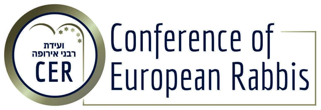

Checking and restoration of Torah scrolls, mezuzot and tefillin
We help communities, synagogues and individuals keep their sacred texts kosher — across Europe and beyond.
What we do
Torah scroll checking (ספר תורה)
We come to your community and check all its Torah scrolls. You receive an official report on the condition of each scroll and a repair cost estimate.
Computer checking
Specialised software finds missing, extra and swapped letters that are easy to miss by eye.
Repair and restoration
Minor corrections are done on site. Scrolls that need major repair are restored in our workshop.
Mezuzot and tefillin (מזוזות ותפילין)
We check, repair and sell kosher mezuzot and tefillin.
Our own software for checking סת"ם
We are currently developing our own software for checking Torah scrolls, tefillin and mezuzot.
Our goal is to make computer checking even more accurate, reliable and accessible for soferim and communities.
- Torah scrolls — checking the entire text
- Tefillin — checking all parshiyot
- Mezuzot — fast and precise checking

Together with the Conference of European Rabbis
Tora Doctor works together with the CER. As part of its programme, we regularly visit communities and synagogues across Europe.
Helping remote communities
We also travel to small and remote communities — for example, to Japan — to check their Torah scrolls and make corrections on site.
Become part of our work
Your support helps us develop new tools and bring mitzvot to Jews around the world.
Sponsor the Torah scroll checking software
We are looking for sponsors for the further development of our software for checking Torah scrolls, tefillin and mezuzot. Your support will help make reliable computer checking available to soferim and communities everywhere.
Donate tefillin or a mezuzah
You can donate kosher tefillin or a mezuzah to a Jew who cannot afford to buy them. We will make sure your gift reaches someone who needs it.
How to donate
Please add a note: "Sponsorship" or "Tefillin / Mezuzah".
Useful apps
Free apps created by Tora Doctor.
A convenient tool for tracking and calculating maaser: income, deductions, multiple currencies.
Go to the app websiteJewish and Gregorian calendar in one app, with events by Hebrew date and Google Calendar sync.
Go to the app websiteNeed a check or repair?
Write to us — we will explain the terms and arrange a convenient date for a visit.